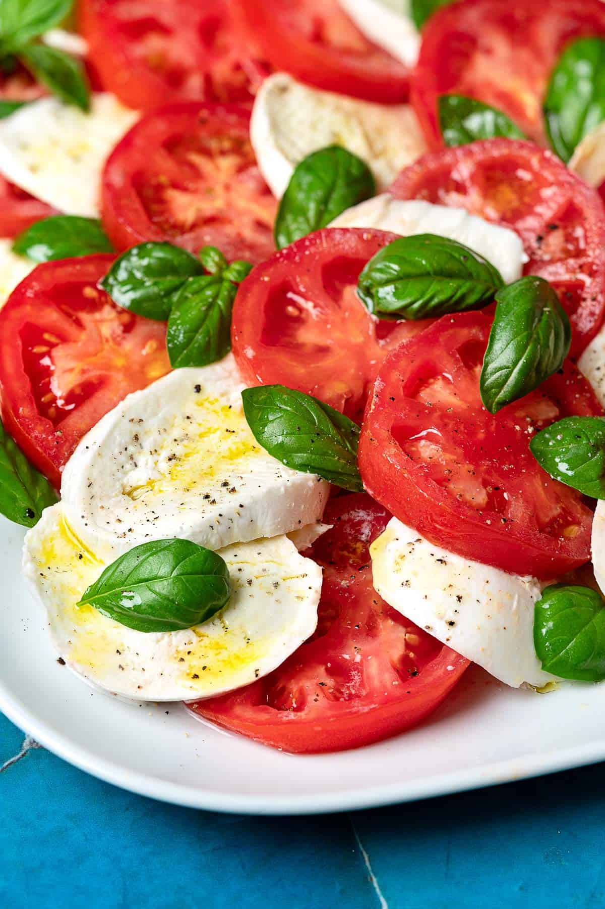

Caprese Salad

Decription
Let's find out how to prepare Caprese Salad!
Ingredients:
- Fresh ripe tomatoes, sliced
- Fresh mozzarella cheese, sliced
- Fresh basil leaves
- Balsamic glaze
- Extra virgin olive oil
- Salt and pepper to taste
Steps:
- Arrange alternating slices of tomatoes and mozzarella cheese on a serving platter.
- Tuck fresh basil leaves between the tomato and cheese slices.
- Drizzle with balsamic glaze and extra virgin olive oil.
- Season with salt and pepper to taste.
- Serve immediately and enjoy this refreshing and easy Caprese Salad!